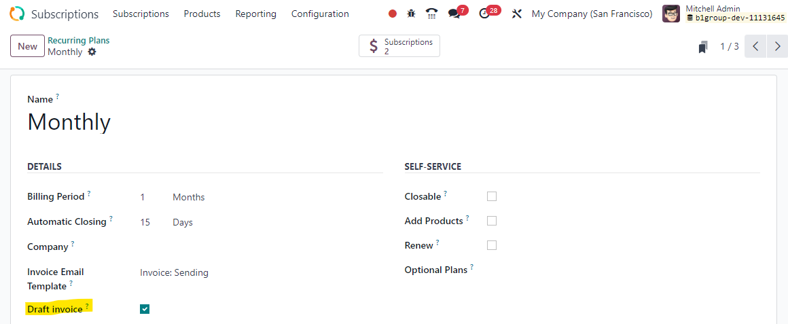

Since Odoo 16, it is no longer possible to generate draft invoices through the option that was previously available in subscription models. Invoices linked to subscriptions are now automatically posted and sent. However, there are times when it is still necessary to create a draft invoice, for example, to ensure that everything has gone smoothly and then manually process and send the subscription invoice.
To address this issue, we have developed a custom module that allows you to once again generate draft invoices. Simply check the "Draft invoice" box in the configuration of the subscription plan linked to the subscription.
The configuration of the subscription can be done in Subscriptions > Configuration > Recurring Plans.
Our module offers a simple and convenient solution to help you streamline your subscription billing process, saving you time and effort.
Download our module today and start creating draft invoices again!
WARNING : If you migrate this module from Odoo 16 to Odoo >= 17, you will need to tick manually the checkbox again since Odoo >= 17 doesn't handle "recurring plans" anymore and replace this with "Subscription plans".
